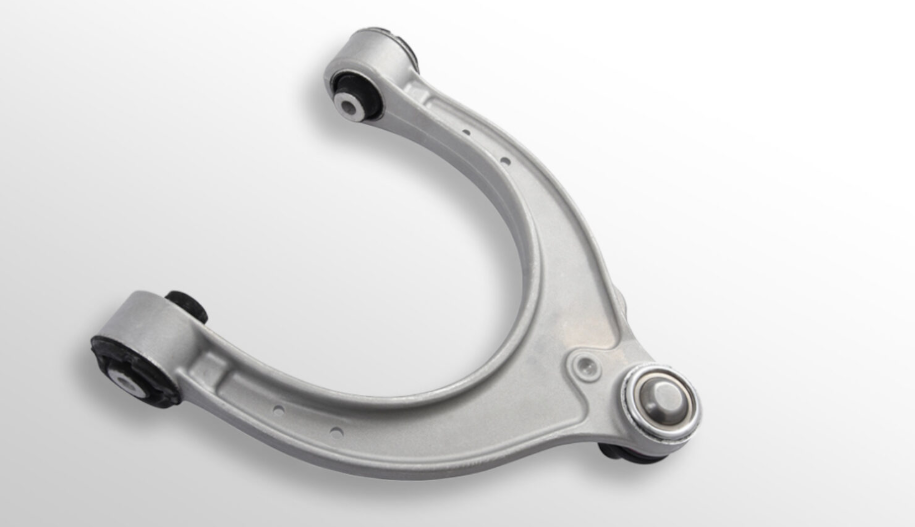
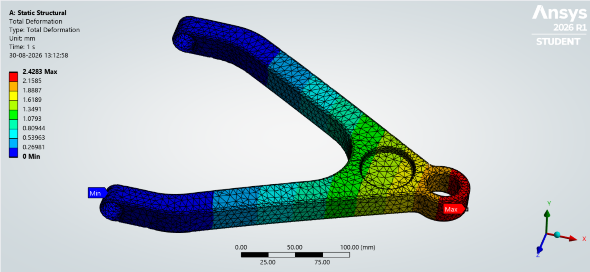
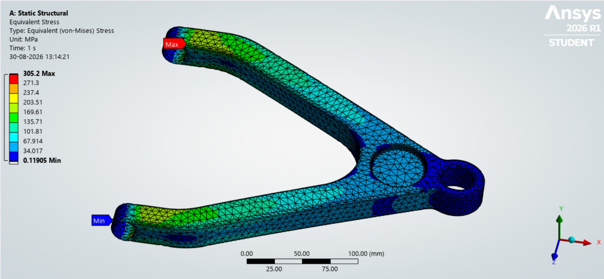

FEA and Machine Learning-Based Optimization
of an Automotive Lower Control Arm

Project Overview
The lower control arm is a critical suspension component
responsible for connecting the wheel assembly to the vehicle
chassis while transmitting suspension loads. This project
focuses on analyzing and optimizing a lower control arm using
Finite Element Analysis (FEA) and Machine Learning (ML).
The influence of structural thickness and fillet radius on
the mechanical performance of the component is investigated
under a representative wheel load.
Objectives
Develop and analyze the lower control arm model using
CAD and Finite Element Analysis.
Investigate the influence of component thickness and
fillet radius on structural performance.
Generate an FEA dataset using multiple design
configurations.
Develop Machine Learning regression models to predict
stress, deformation and factor of safety.
Identify an optimized design that balances structural
strength and component weight.
Methodology
The project integrates CAD modelling, Finite Element Analysis
and Machine Learning. The lower control arm geometry is
developed in SolidWorks and analyzed using ANSYS under a
representative wheel load. Multiple configurations are
generated by varying the structural thickness and fillet
radius. The resulting FEA data, including maximum von-Mises
stress, deformation and factor of safety, are used to train
regression-based Machine Learning models. The trained models
are then used to predict structural performance and identify
promising design configurations.
Simulation Parameters
Representative wheel load: 3.7 kN
Variable structural thickness
Variable fillet radius
30 different design configurations
Simulation Results
Finite Element Analysis was performed to evaluate the
structural response of the lower control arm under the
applied wheel load. The resulting deformation and
von-Mises stress distributions were analyzed to evaluate
the mechanical performance of the component.

Figure 1:
Total deformation distribution of the lower control arm.

Figure 2:
Von-Mises stress distribution of the lower control arm.
Performance Parameters
Maximum von-Mises stress
Total deformation
Factor of safety
Component mass
Machine Learning Models
Machine Learning models are developed using the FEA dataset
to establish relationships between geometric parameters and
structural performance.
Linear Regression
Decision Tree Regression
Random Forest Regression
ML Inputs & Outputs
Input Parameters:
Component thickness
Fillet radius
Applied wheel load
Predicted Parameters:
Maximum von-Mises stress
Total deformation
Factor of safety
Tools & Technologies Used
SolidWorks
ANSYS
Python
Machine Learning
Finite Element Analysis (FEA)
Data Analysis and Visualization
Expected Outcomes
Determine the influence of thickness and fillet radius
on the structural performance of the lower control arm.
Develop ML models capable of predicting FEA-based
structural responses.
Compare the prediction performance of different
regression models.
Identify a suitable lower control arm configuration
based on strength and weight considerations.
Reduce computational effort through ML-based
performance prediction.